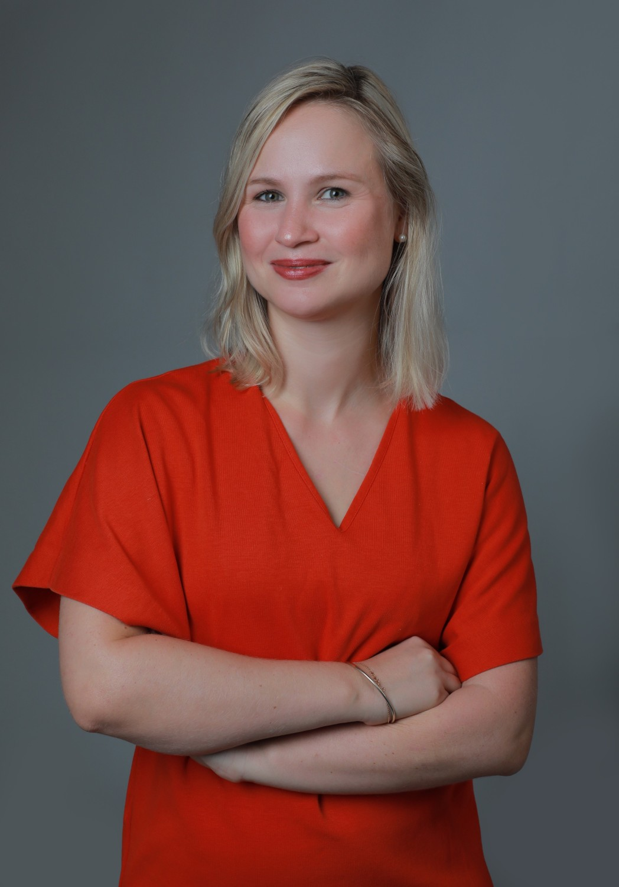
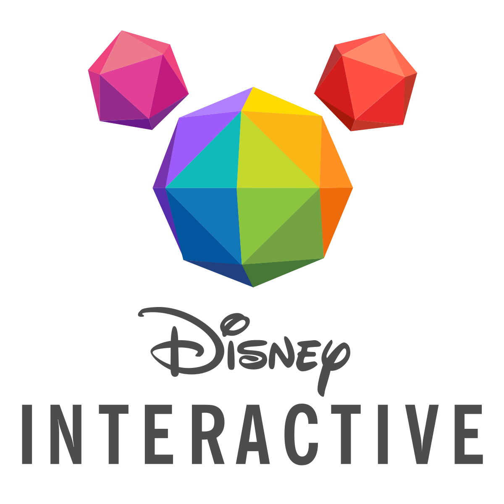
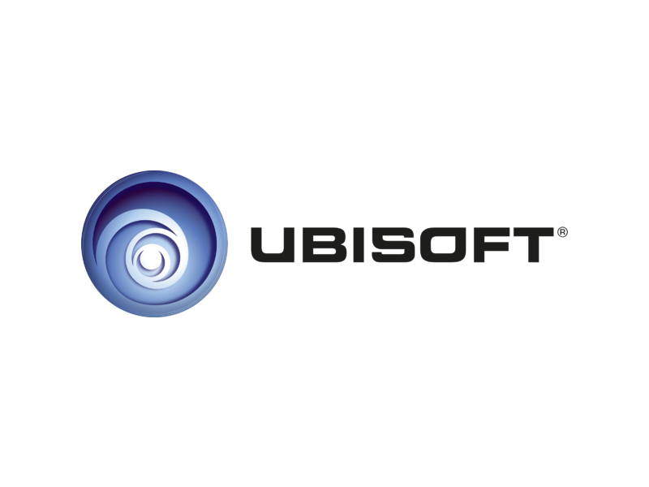
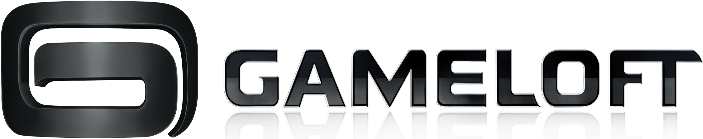
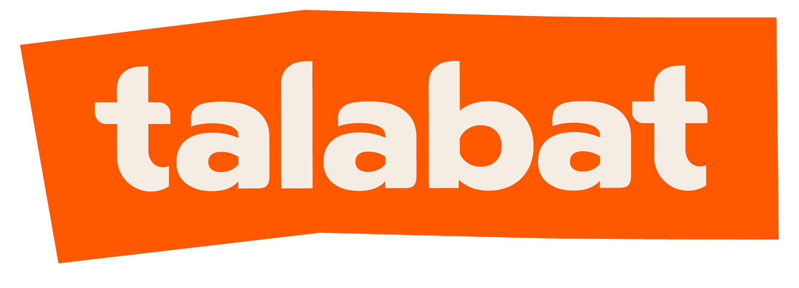
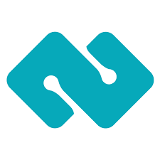
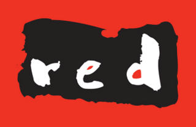

Noémie
Pillon.
15+ years partnering with founders and CEOs across three continents to translate strategy into execution. The how to the why.

About
I am the how to the why. I sit close to founders and CEOs, turn ambiguous priorities into operating systems, and make sure the right things actually ship.
For 15 years I have worked in the valuable middle ground between strategy and admin: cross-functional ownership across operations, finance, people, commercial and investor conversations, without needing to be the specialist in any single one. That is the territory where strong Chiefs of Staff are built, and it is the territory I have lived in across Disney, Gameloft, Talabat, Audiomob, Boss Bunny, Pedigri and others.
My career has been built across three continents and a dozen markets: London and Paris in Europe; Singapore, Vietnam, China and New Zealand in Asia; the UAE, Saudi Arabia and the wider MEA region from Dubai. That kind of cross-cultural exposure is not a line on a CV - it shapes how I read a room, how I run global teams across time zones, and how I help leadership teams calibrate decisions that need to land in very different cultural contexts.
Today I run Commercial Operations at Pedigri Technologies, working directly with the CEO on the strategic projects, cross-functional fixes and operational governance that move the business forward. My pattern across every role has been the same: founder proximity, solving unclear problems, fixing gaps between teams, and translating strategy into execution without needing heavy structure to do it.
I am intentional about where this leads next. The natural step is Chief of Staff to a CEO - whether at a high-growth startup, a scaling SME, or inside a larger corporate where a senior operator is needed to upgrade the operating system, sharpen prioritisation, and unlock the leadership team's time.
Knowing what matters, what does not, and what should reach the CEO versus get solved without them. Trusted with sensitive topics: comp, founder dynamics, investor and board conversations.
Fluent across sales, finance, people, product and operations. Closed a $3M Series A extension at Audiomob, sold a majority stake in Boss Bunny, ran the back-end of a regional mobile app launch.
KPI architecture, dashboards, and decision frameworks that hold a leadership team accountable to the five things that matter, not the hundred that feel urgent.
Strategic counterpart to HR and People leaders, not a replacement for them. Org design, headcount planning, hiring at scale (3-4x at Audiomob), and reading the soft signals across multicultural teams.
Worked and led teams across Europe, Southeast Asia and MEA. Comfortable with the cultural nuance of running a French-led company in Dubai, a UK ad tech in Abu Dhabi, or a US-headquartered scale-up across three time zones.
Building modern internal operating systems: workflow automation, AI-enabled reporting, and decision support tools that compound a CEO's time. A core differentiator for the next decade of CoS roles.
Previously worked for and with







The Journey
London & Singapore
Started my career on the analyst side of one of the fastest-scaling internet companies of the decade. First in London, then moving to Singapore as the business expanded across Asia.
Singapore
Defined the global monetisation strategy for free-to-play mobile games, working with studios across Vietnam, Ukraine, China and New Zealand. Drove a 45% lift in IAP revenue and 50% in ARPU.
Singapore
Ran business operations for Disney Interactive across Southeast Asia. Built the KPI dashboards that doubled visibility on key game titles, and supported the regional MD on the five-year strategic plan.
Dubai
Led performance and digitalisation at the region's largest video game distributor, partnering with EA, Activision and Warner Bros. Ran the back-end operations behind a regional mobile app launch.
Dubai
Switched from gaming to deep-tech B2B. Owned business development across 30+ countries in MEA and APAC, closing partnerships with Philips Healthcare and Darktrace.
Dubai
Joined MENA's leading food delivery brand right as the pandemic hit. Embedded with the MD on sales targets, prioritisation and KPI tracking through one of the most volatile periods the business had ever seen.
Abu Dhabi & Dubai
First operational hire at the UAE's first mobile games startup. Worked side-by-side with the founder on the investment materials and due diligence that led to the sale of a majority stake to Waysun Inc. within two years of launch.
Abu Dhabi
CEO's right hand across Operations, Finance, Marketing and HR in three countries (US, UK, UAE). Closed a $3M Series A extension, delivered triple-digit revenue growth for three consecutive years, and grew headcount 3-4x.
Dubai Now
Working directly with the CEO on commercial operations, strategic projects and operational governance. Closing the gaps between sales, ops and trade compliance, owning senior-level BD, and building the systems that make decisions easier. Full-circle from where I first met Pedigri in 2019, now from the inside.
Publications & Press
Looking for a Chief of Staff or strategic operator?
I work with founders and CEOs across startups, SMEs and corporates - wherever a senior operator is needed to upgrade the operating system and unlock leadership time.